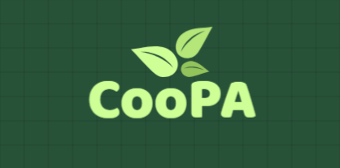
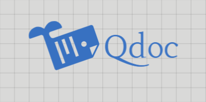
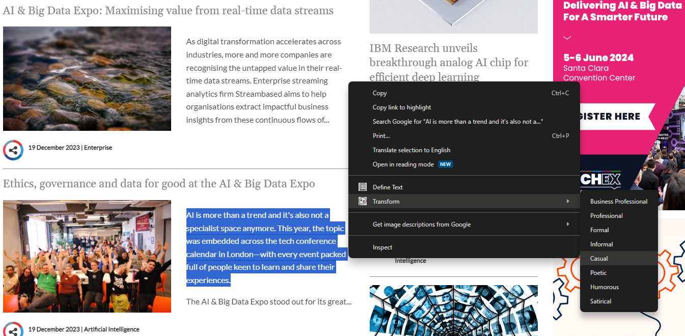

My goal in creating AI projects is to harness the transformative capabilities of Large Language Models (LLMs) and seamlessly integrate them into diverse applications.
By leveraging the power of LLMs, I aim to enhance the intelligence, functionality, and user experience of these applications, pushing the boundaries of what AI can achieve in various domains.
This endeavor reflects my commitment to unlocking the full potential of artificial intelligence to drive innovation and elevate the impact of technology in our daily lives.
-
SpotOn is a Django web application that integrates OpenAI's GPT-3.5-turbo language model with the Google Places API.
This fusion results in a sophisticated platform for place search and intelligent question-answering.
Key Features:
- Review-based Q&A: Leverage place reviews to answer user queries using OpenAI's GPT-3.5-turbo language model.
- Place Search: Utilize the Google Places API to search for places based on user queries.
- Interactive Map: Display search results on an interactive map for enhanced user experience.
- Dynamic UI: Dynamically update the interface to allow users to ask questions about selected places and receive AI-generated responses.
APIs: OpenAI ChatGPT API, Google Places API, Google Maps API
Libraries: requests
-
CooPA is a Flask web application that leverages OpenAI's ChatGPT API and the Google Custom Search API
to deliver contextually informed answers by aggregating relevant content from online articles based on user queries.

Key Features:
- Smart Search: Perform intelligent searches using Google Custom Search and aggregate content from relevant articles to generate comprehensive answers.
- Language Model Interaction: Utilize OpenAI's GPT-3.5-turbo for generating contextually informed responses to user queries.
- Speech Recognition and Synthesis: Enable users to input queries through speech and listen to the synthesized responses.
- Source Attribution: Automatically include source URLs when presenting the aggregated content, offering transparency and credibility.
APIs: OpenAI ChatGPT API, Google Custom Search API
Libraries: OpenAI, requests, BeautifulSoup
-
Qdoc is a Flask web application that utilizes a Large Language Model (LLM) to summarize articles from a given URL or PDF.
Additionally, it can answer questions related to the article using the conversation history, the article's content, and common knowledge.

Key Features:
- Summarization from URL or PDF: Summarize the contents of an article by providing a URL or PDF link.
- Question-Answering: Inquire about specific details or seek clarification regarding the article, and the system generates answers based on conversation history and article content.
- Conversation History: Ask follow-up questions based on the ongoing conversation.
- Refresh Conversation: Clear the conversation history to initiate a fresh dialogue.
APIs: OpenAI ChatGPT API
Libraries: OpenAI, requests, BeautifulSoup, PyMuPDF
-
GPT Optimization with RAG
is an exploration of Retrieval-Augmented Generation (RAG) techniques using Langchain and LlamaIndex frameworks.
Objectives:
- Langchain Experimentation: Understand the functionalities of Langchain components such as document loaders, text splitters, embeddings, and vector stores.
- LlamaIndex Experimentation: Experiment with LlamaIndex for document retrieval and indexing, and explore its capabilities in handling large datasets.
- OpenAI GPT-3.5-turbo Integration: Integrate OpenAI's GPT-3.5-turbo into both the Langchain and LlamaIndex workflow for natural language generation.
- Hands-on Learning: Use Colab as the primary environment to gain insights into the strengths and limitations of RAG techniques by conducting practical experiments.
APIs: OpenAI ChatGPT API
Libraries: OpenAI, langchain, chromadb, langchainhub, bs4, tiktoken, llama_index, pypdf, PyMuPDF
-
aiXtensions consists of two independent Chrome extensions:
LookItUp and Persona, each leveraging OpenAI's ChatGPT API for text-related tasks.
Key Features:
- LookItUp: Allows users to define highlighted text on a webpage using OpenAI's GPT-3.5-turbo.
- Persona: Transforms highlighted text into different styles of language using OpenAI's GPT-3.5-turbo.
APIs: OpenAI ChatGPT API
